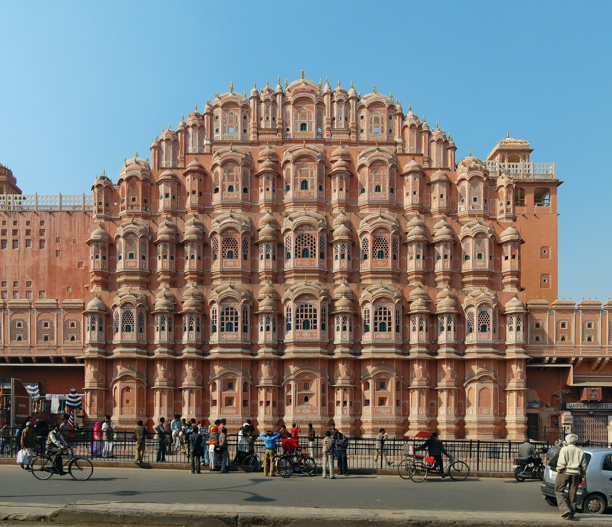
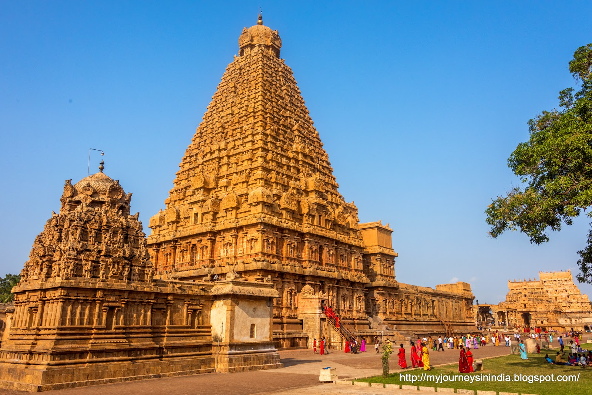
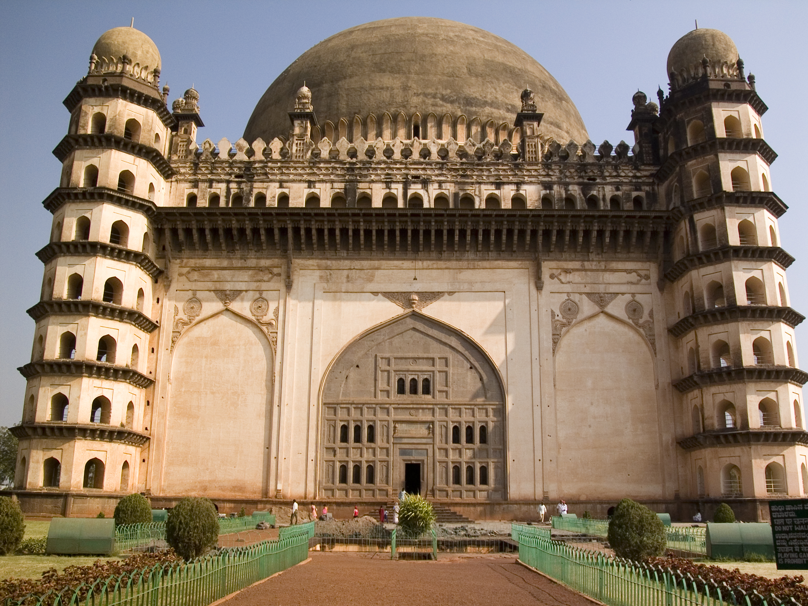

Qutub Minar
The tallest brick minaret in the world, showcasing Indo-Islamic architecture in Delhi.

Hawa Mahal
The "Palace of Winds" in Jaipur, known for its unique honeycomb structure.

Brihadeeswarar Temple
A UNESCO World Heritage Site in Thanjavur, showcasing stunning Dravidian architecture.

Gol Gumbaz
Famous for its massive dome and acoustic marvel, located in Bijapur.

Victoria Memorial
A grand marble structure in Kolkata blending Indo-Saracenic and British architectural styles.